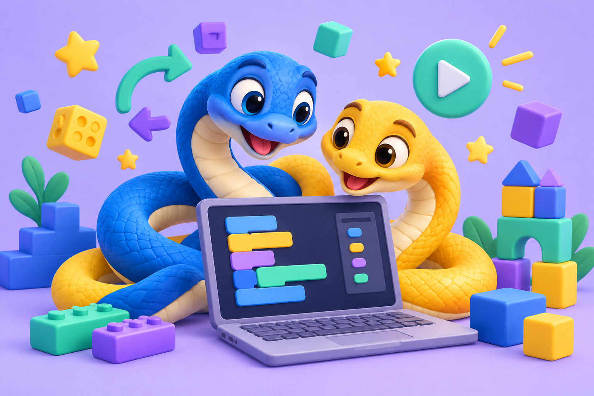

РОЗДІЛ 01
Знайомство з Python
Перші команди, введення й виведення, змінні та типи даних.
5 інтерактивних тем
Перейти до розділу →Навчайся через квести: від першого Hello World до ігор, малюнків і власних застосунків.
Обрати розділ ↓
Обери розділ. Усередині — список тем і доступні інтерактиви.
Перші команди, введення й виведення, змінні та типи даних.
Обираємо дії, порівнюємо значення й перевіряємо правила.
Повторюємо дії та вчимо програму працювати крок за кроком.
Зберігаємо, впорядковуємо та опрацьовуємо колекції даних.
Створюємо власні команди та використовуємо їх повторно.
Знайомимося з готовими інструментами для нових проєктів.